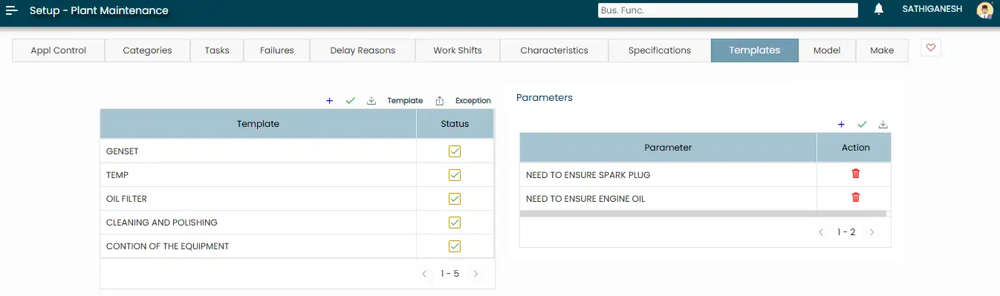

<div data-category="Plant Maintenance" data-title="Template" data-updated="January 27, 2026" data-contributors="RoadmapIT" data-breadcrumb="Home,Plant Maintenance,Template">
  <div class="page-content">
    <p>Templates to map the specifications and characteristics are defined in this screen. User can select the specification template from which mapped characteristics will be carried over to the transactions.</p>
    <h5>Navigation path:</h5>
    <p class="fs-6">Plant Maintenance \ Setup \ Setup-Plant Maintenance \ Template</p>
    
    <ul style="list-style-type: none; align-content: center">
      <li class="mouse-icon">
        By Clicking the
        <i class="bi bi-plus fs-4 mx-2 text-primary"></i>
        Add button we can create new Templates
      </li>
      <li class="mouse-icon">Enter the Template</li>
      <li class="mouse-icon">Enter the Parameter</li>
      <li class="mouse-icon">
        Click on
        <i class="bi bi-check-lg fs-4 mx-1 text-success"></i>
        button to save
      </li>
    </ul>
  </div>
</div>
